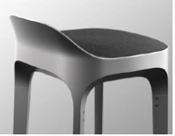
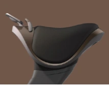
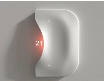
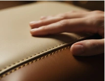
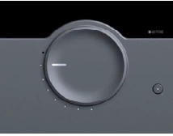
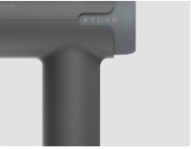

01星弧 ARC
02曜影 ORIGIN
机械美感
03凌序 LINEAR
在极简、克制、现代的基础上，引入柔和的轮廓、亲肤的触感与家居化材质，
让产品既有科技感，也有日常陪伴感。
















01

Mirage 澄境
宽大纯平
02

Lynmate 灵伴
一机双用
03

Bamboo 竹韵
单手收纳
04

Zephyr 蝶悦
舒展轻盈
05

Origin 曜影
机械美感
06

Linear 凌序
格调设计
历史探索 · 本轮继续星弧、曜影、凌序三稿
更高效 · 更悦己 · 更能定义自我
• 自然、居家、亲和、克制
• 从产品与人群研究走向家庭生活
• 全域跑台、下置电机的共同路线
• 在三种性格中继续深化设计体验

设计过程


自由滚动 / 左右键跳页 · 点击图片放大 · Esc关闭 · 浏览器打印可导出PDF